Most used
pRIMe-MRI
Rehearse the scanner on your own phone: the room, the breath-hold, the sound. Six languages, no headset.
16 of 16 patients at one month
primemri.netlify.app ↗Department of Radiology · interactive
Two patients carry the story. The first: a knee from the first film to the operating list. The second: a woman whose first MRI is already half dealt with before she arrives. Each innovation here is labelled for what it can prove today — validated, live service, or pilot — including the ones we did not build ourselves.
90 seconds · four programmes · touch to begin
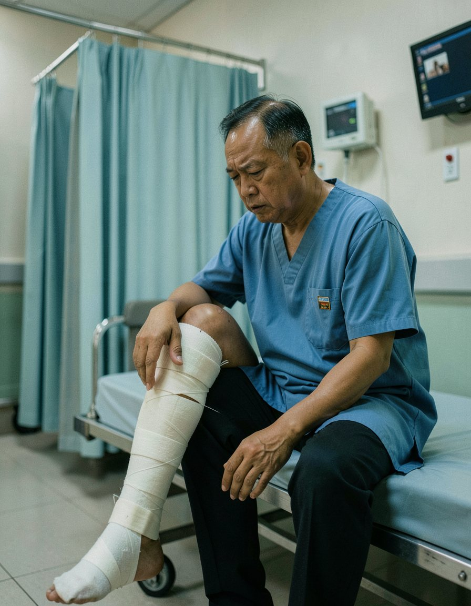
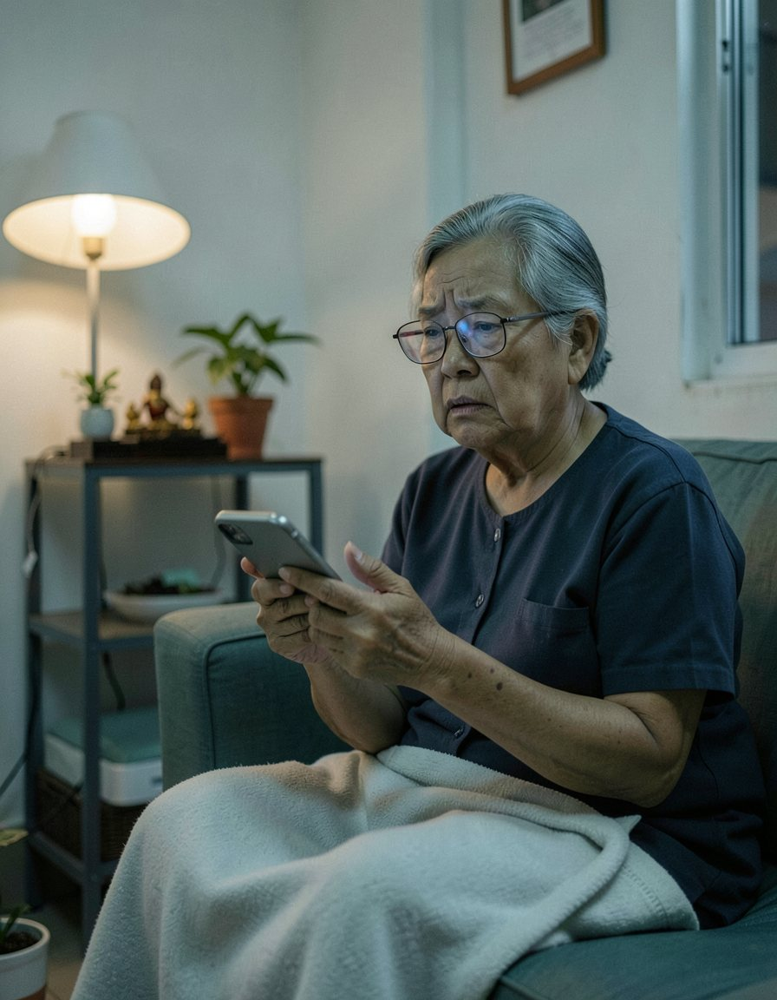
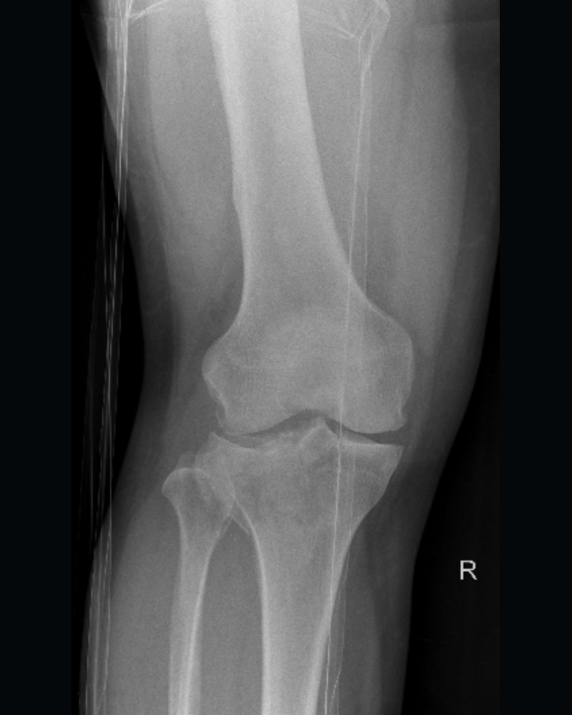
1 · RbFracture · film 1 of 4
Is there a fracture?
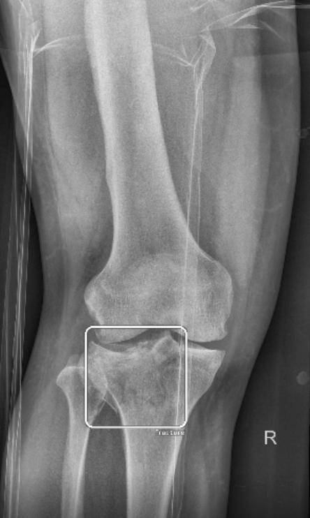
All four films read. Your call matched the reporting radiologist on 0 of 2 cases.
The AI agreed with the radiologist in both. That agreement is the point: it is checked, not trusted.
Tap an answer. The AI overlay is revealed afterwards, never before.
1 · RbFracture · case 1 · fracture
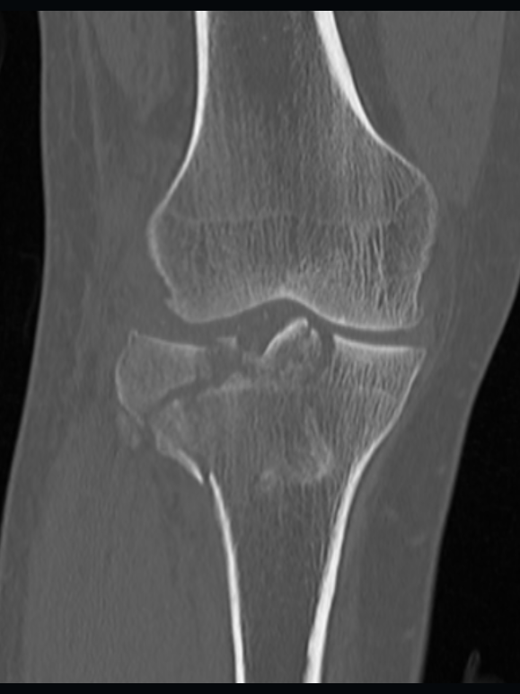
Coronal bone window. A coronal split fracture runs through the lateral tibial plateau.
1 · RbFracture · the same CT
3D view needs WebGL. The still render and the AR link below still work.
AR opens in Apple Quick Look. Model decimated — not for diagnostic use.
Spectral data from the same acquisition maps marrow oedema — the bruise inside the bone plain CT cannot show.
1 · RbFracture · case 2 · no fracture
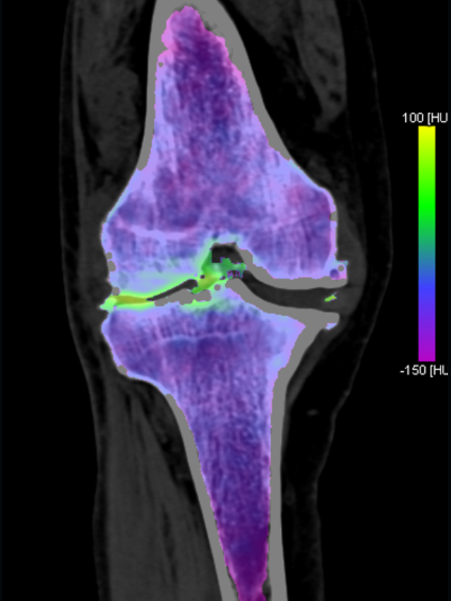
No marrow oedema on the fusion map. Nothing for the spectral data to flag.
What this case teaches
Patient B walked in with this knee, and dual-energy CT did what it was ordered to do: it excluded an occult fracture the same night, without an MRI slot and without an admission to reach a scanner.
No fracture. Degenerative change explains the pain. Analgesia, physiotherapy, and home.
3D + 4D · the lab
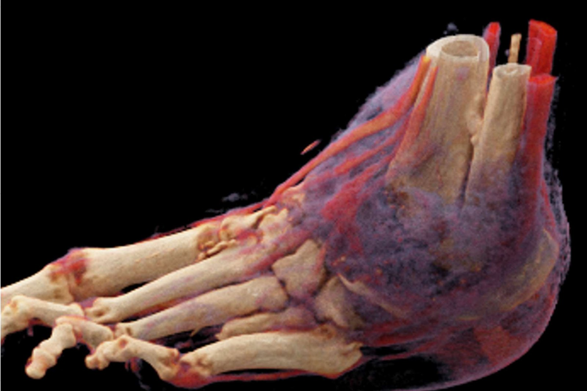
Charcot arthropathy. The talar dome articulating with the midfoot instead of the tibia.
3D + 4D · static, or a movie
Rad-ART · clinical 3D from the scan already taken. Playing locally, no network.
3D + 4D · denoising
A denoiser rebuilds the image from the same raw data, and its strength is a setting — so a scan can be acquired at lower dose and still read. That dose pays for new dimensions of CT, like a joint imaged repeatedly in motion.
Vendor example — not our data
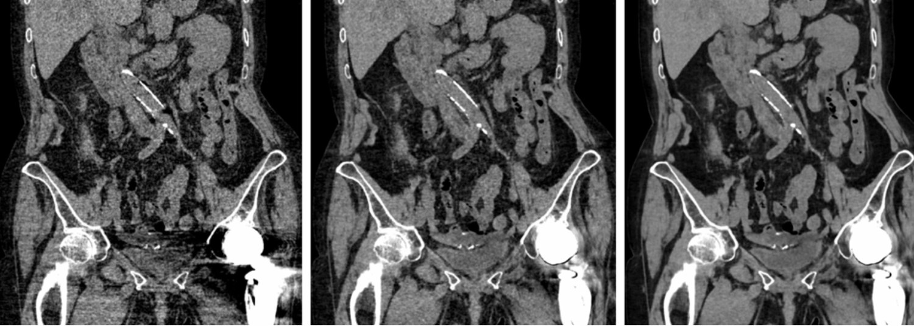
One scan, three reconstructions: nothing extra was taken. A dose target with a quality floor, reported tier by tier — not a saving we have banked.
3D + 4D · the joint in motion
Pilot · feasibility and workflow · no outcome data yet · no additional patient charge.
4 · pRIMe · before the scan
She is anxious, she is claustrophobic, and she speaks Hokkien. She has never been inside a scanner. That combination is why scans get abandoned, repeated, or done under sedation.
The journey starts before the scanner
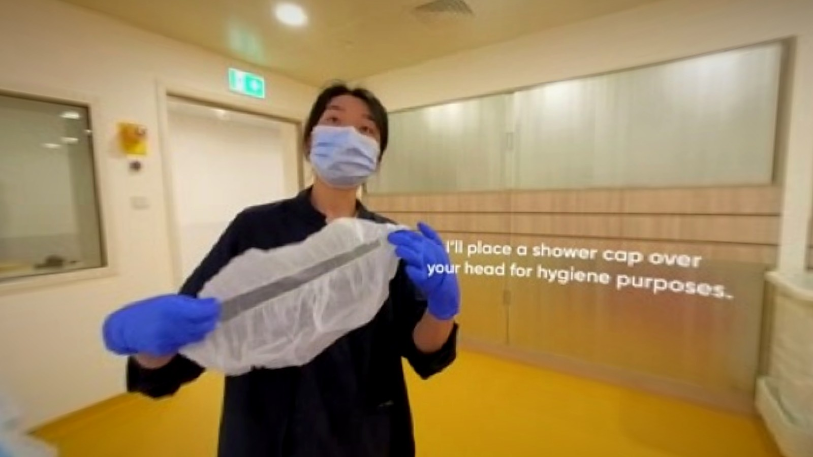
Room footage · preparation videoThe room she will lie in, filmed once so she can walk through it the night before.
It was built in this department, by a clinician. No headset, no app to install: a link, her own phone, her own language.
The link needs a connection. Everything else on this station runs offline.
3 · MRI acceleration · in the scanner
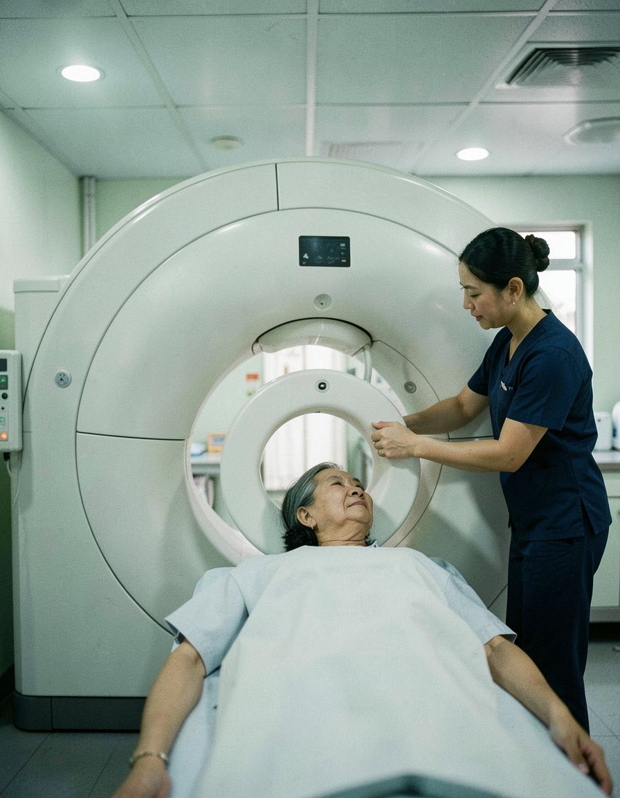
Weeks later she needs an MRI of her liver. Reconstruction rebuilds the image from less data, so the scan ends sooner.
Two scans, one timetable
Illustrative timing, not a measured chart.
Not started.
About 37% shorter across 8 musculoskeletal anatomies — an initial evaluation, MSK only.
Less time in the bore is the clinical point: less to abandon, less to repeat, less to sedate.
The vendor's own comparison
Vendor example — not our data
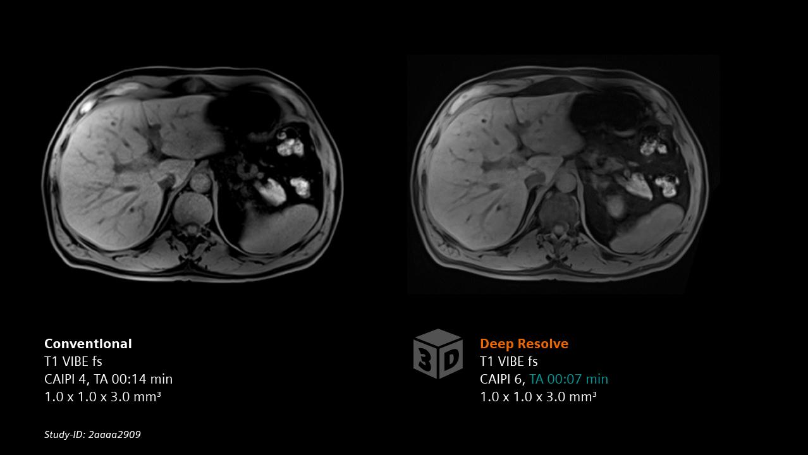
What this rests on
An initial evaluation, musculoskeletal only.
Not every protocol, and not every patient.
Our paired images are not on this station.
We measured scan time. The comparison beside it is the vendor's, and labelled as theirs.
Built here
Most used
Rehearse the scanner on your own phone: the room, the breath-hold, the sound. Six languages, no headset.
16 of 16 patients at one month
primemri.netlify.app ↗How to read bone-marrow oedema on dual-energy CT.
dectbme.netlify.app ↗Patient-specific 3D and AR for the consultation, from the scan already taken.
radart.netlify.app ↗An abbreviated lumbar-spine MRI, with the patient explainer beside it.
dixonlspine.netlify.app ↗Takeaway
01 · RbFracture · validated
A fracture copilot in the emergency department. 1,102 consecutive radiographs; 6 fractures caught that the first reports missed.
02 · 3D + 4D · service and pilot
Photorealistic models from the scan already taken, digital-first so most cases never reach a printer. The 4D pilot is still a pilot.
03 · MRI acceleration · evaluation
About 37% shorter across 8 musculoskeletal anatomies. Less time in the bore is the part the patient feels.
04 · pRIMe · in-house
The scanner rehearsed at home, in the patient's own language. 16 of 16 positive at one month.
What this does not claim. Studies negative on both AI and the report were not re-read, so sensitivity is likely an overestimate. The 37% is musculoskeletal only. The dose ladder and the 4D pilot are targets, not results. The manuscript is in preparation.
The pattern: measure the problem, validate on our own patients, keep the radiologist as final interpreter, and let the people who use the tools build them.